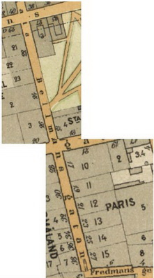
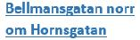
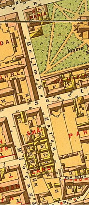

|
 1899 |

 Bellmansgatan löper från Mariahissen i norr förbi Maria Magdalena kyrka och S:t Paulsgatan till Fredmansgatan i söder, en sträcka på cirka 440 meter. Vid Fredmansgatan slutar Bellmansgatan i trappor. Bellmansgatan skärs itu av Hornsgatan som 1901 sänktes till dagens nivå. Hornsgatspuckeln anger fortfarande den gamla gatunivån. Tidigare namn (för den norra delen) var Höghlåfftzgrenden (1649) och Högeloftz Gathun (1661). Delen söder om S:t Paulsgatan kallades även Kämpesgränd (1660-talet). Sitt nuvarande namn fick gatan år 1871 efter skalden Carl Michael Bellman som föddes i huset nr. 24 på dåvarande Björngårdsbrunnsgatan. Bellmans födelsehus avsåg det så kallade Stora Daurerska huset som låg vid hörnet Bellmansgatan / Hornsgatan. Huset revs 1901 i samband med breddningen och sänkningen av Hornsgatan. Hornsgatans ombyggnad ledde även till att Bellmansgatan numera består av två gatudelar. Förslaget till namnändring kom från privatpersoner som bodde på närbelägna Björngårdsgatan. De ville ändra gatunamnet Björngårdsbrunnsgatan till Bellmansgatan och menade att förväxling a dessa parallelt gående gator dagligen ägde rum till stor olägenhet för den trafikerande allmänheten. |
 1885 |


{kind=link}
{kind=link}